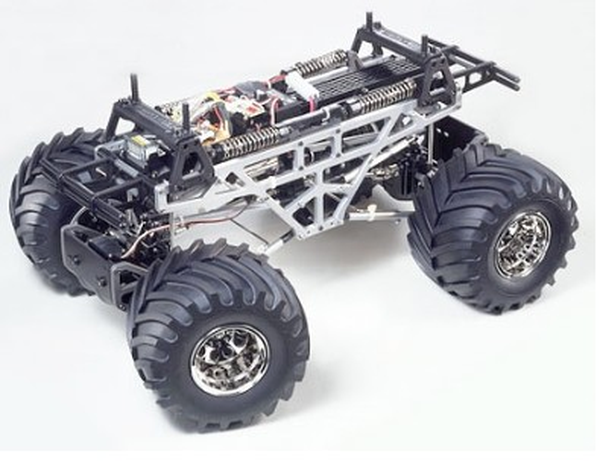

タミヤ TXT-1

引用元画像：タミヤ公式サイト
📋 基本情報
| メーカー | タミヤ（Tamiya） |
|---|---|
| 機種名 | TXT-1 |
| 型番 | 58280 |
| 発売時期 | 2001年4月 |
| 価格 | 44,800円 |
| 生産状況 | 生産終了 |
| カテゴリー | ラジコンカー（1/10スケール 電動RCカー） |
| サブカテゴリー | モンスタートラック（4×4ビッグフット） |
📏 シャーシスペック
| 全長 | 510mm |
|---|---|
| 全幅 | 385mm |
| 全高 | 297mm |
| 最低地上高 | 49mm |
| 全備重量 | 5,010g（サーボ×2・受信機・バッテリー搭載時） |
| ホイールベース | 330mm |
| トレッド | 前後とも280mm |
| タイヤ幅/径 | 前後とも106/165mm |
| フレーム | ジュラルミン/アルミ製ツインバーティカルプレート・ラダーフレーム構造 |
⚙️ 駆動系
| 駆動方式 | シャフトドライブ4WD |
|---|---|
| デフギヤ | 前後とも3ベベルデフ |
| ギヤ比 | 34:1 |
| モーター | 540タイプ×2個（双発モーター・並列配置） |
| スピードコントローラー | 3段変速スイッチ |
🔧 サスペンション
| 形式 | 前後とも4リンクリジッド・カンチレバー方式 |
|---|---|
| ダンパー | CVAオイルダンパー（フレーム上部に縦置き搭載） |
| ステアリング | 2分割タイロッド式 |
| キャスター角 | 前後とも0° |
| キャンバー角 | 前後とも0° |
| トー角 | 前後とも0° |
💡 特徴
豪快パワーのツインモーター4WD
- アメリカン・モンスタートラックの迫力を再現
- パワー重視の並列配置ツインモーター採用
- 車体中央のトランスファーからプロペラシャフトで前後のアクスルに動力を伝達
カンチレバー方式のサスペンション
- 4本のオイルダンパーをメインフレーム上部に縦置きで搭載
- ホーシングから伸ばしたプッシュロッドにより大型のロッカーアーム（ロッキングアーム）を押すことで作動
- 実車同様の4リンク式サスペンション
- 桁外れのサスストロークと大径タイヤが驚異的な悪路走破性を発揮
高剛性なシャーシ構造
- サイドフレームやサスアームにアルミ材を使用
- ジュラルミン製ラダーフレームで高い剛性を確保
- 金属部品を多用した実車モンスタートラックのメカニズム再現
こだわりのディテール
- 塗装・カット済みのフィニッシュボディに加え、スペア用のクリアボディが同梱
- 直径165mm/幅110mmのV型ラグパターンタイヤを装着
- 四輪操舵(4WS)も可能（リア用ステアリングサーボを追加）
🔧 ぽすとそに工房での修理実績
修理難易度
★★★★☆
ぽすとそに工房としては、現物を見て触ったことがありますので修理は可能だと思いますが、どのようなカスタムをされているか分からないので、この難易度にしました。
よくある故障・注意点
- 生産終了から20年以上が経過しており、パーツ入手が困難
- ツインモーター構成のため、電力消費が大きい
- 3段変速スイッチは現代のESCに比べると制御が粗い
- 重量級（約5kg）のため、クラッシュ時の衝撃が大きい
- カスタムされている個体が多く、個体差が大きい
修理のポイント
- カンチレバー式サスペンションの調整が複雑
- ツインモーター用のESCへの換装がおすすめ
- アルミパーツの破損は修理が難しい場合がある
- 大径タイヤのメンテナンスが重要
その他の特徴
- TXT（Tamiya Xtreme Truck）の略称
- 同社の電動ビッグフットモデルのフラグシップ機
- 2001年当時の価格44,800円は電動RCカーとしては高価格帯
- コレクターズアイテムとしての価値が高い